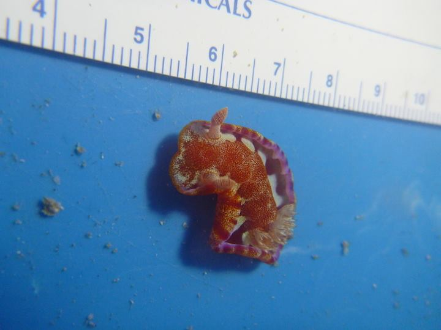
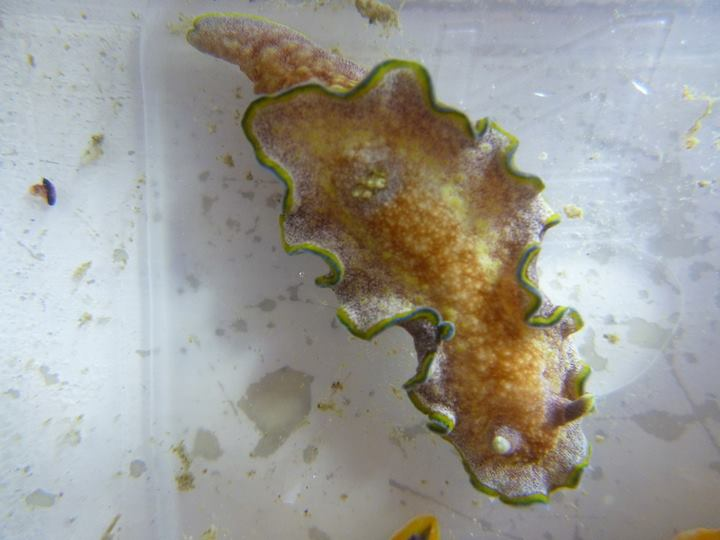
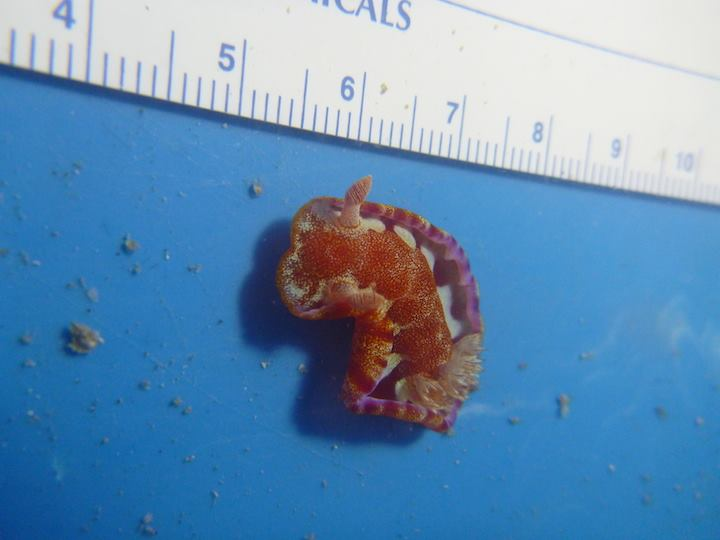
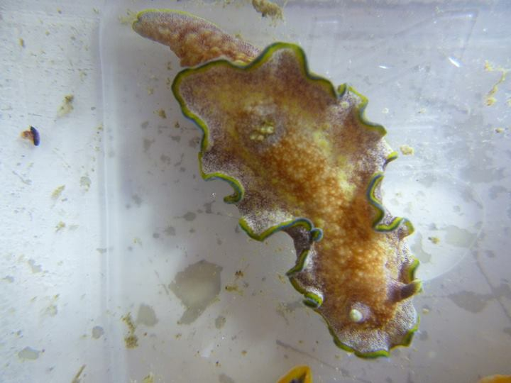
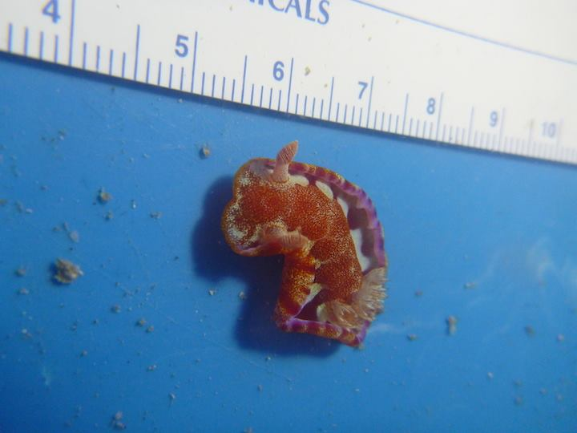
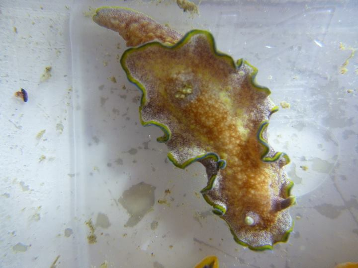
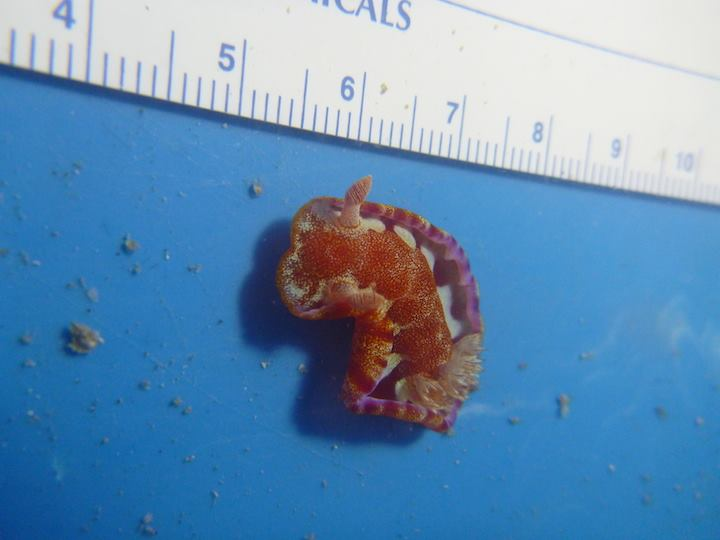
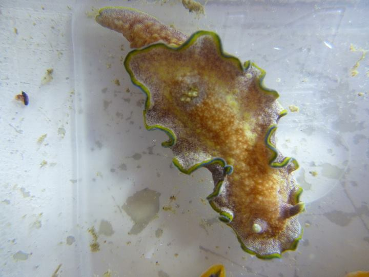
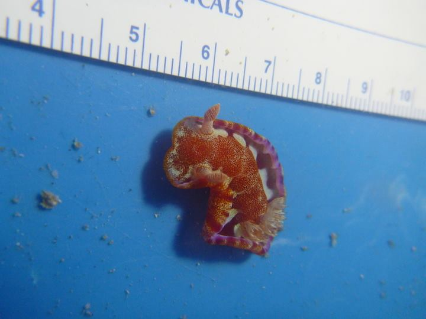
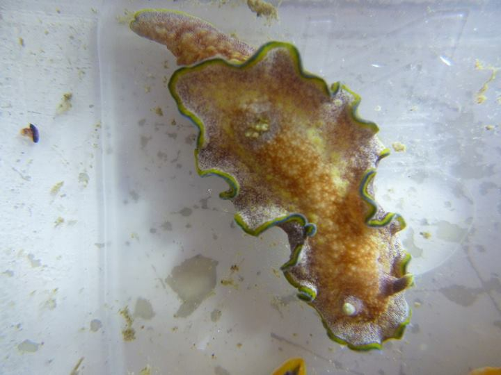

Home
CV - Shayle Matsuda
Shayle studies slugs
Check it
Scuba diver
Finding slugs is a 6th sense
Nudibranchs are
rad
Why are nudibranchs so cool?
 
Let me count the ways
They are found in all the world's oceans
They sequester their prey's chemical defenses and use them to defend themselves
They can tell us a lot about cryptic coloation
Some of them eat
Portuguese Man-o-War
Slugs
 






